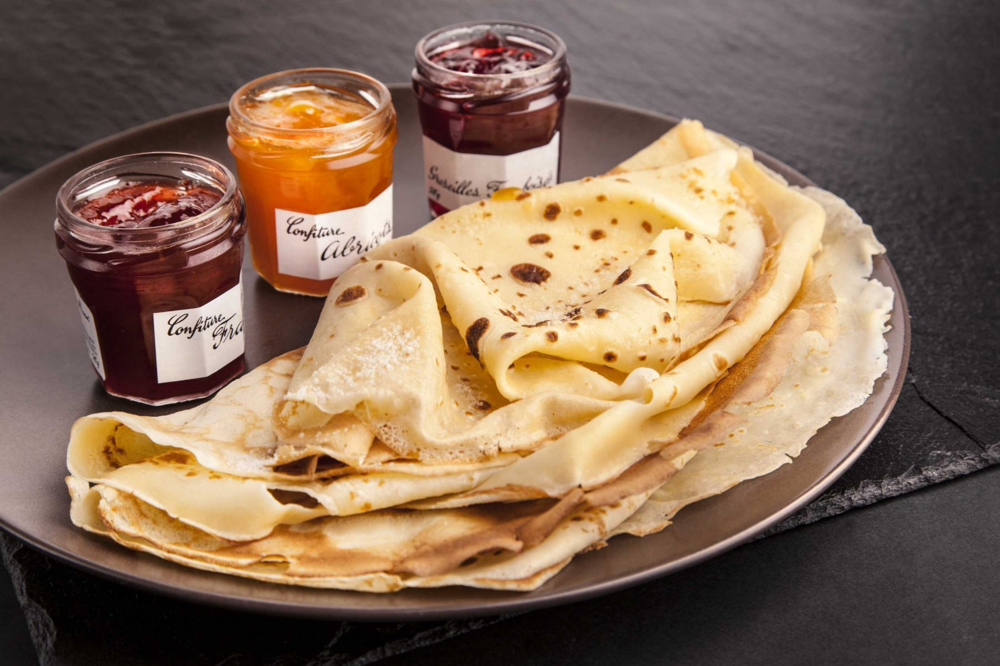

recette crêppes
liste des ingrédients pour 4 personnes
- farine 250g
- lait 1/2litres
- sucre 2c à s
- oeuf 4
- sel 1 pincée
- Beurre fondu 50g
préparation
- Mettez la farine dans un saladier avec le sel et le sucre.
- Faites un puits au milieu et versez-y les oeufs.
- Commencez à mélanger doucement. Quand le mélange devient épais, ajoutez le lait froid petit à petit.
- Quand tout le lait est mélangé, la pâte doit être assez fluide. Si elle vous paraît trop épaisse, rajoutez un peu de lait.
- Ajoutez ensuite le beurre fondu refroidi, mélangez bien.
- Faites cuire les crêpes dans une poêle chaude (par précaution légèrement huilée si votre poêle à crêpes n'est pas anti-adhésive).
- Versez une petite louche de pâte dans la poêle, faites un mouvement de rotation pour répartir la pâte sur toute la surface. Posez sur le feu et quand le tour de la crêpe se colore en roux clair, il est temps de la retourner.
- Laissez cuire environ une minute de ce côté et la crêpe est prête.

source